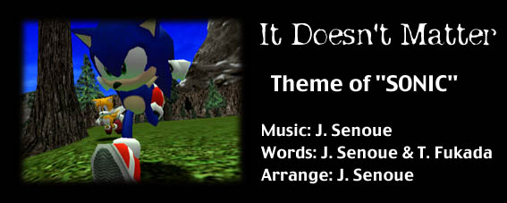

Well, I don't show off, don't criticize
I'm just livin' by my own feelings
And I won't give in, won't compromise
I just only have a steadfast heart of gold
I don't know why, I can't leave though it might be tough
But I ain't out of control, just livin' by my word
Don't ask me why, I don't need a reason
I got my way, my own way
* It doesn't matter now what happens I will never give up the fight
There is no way I will run away from all of my frights
Long as the voice inside me says go, I will always keep on running
There is no way to stop me from going to the very top
It doesn't matter who is wrong and who is right
Well, I won't look back I don't need to
Time won't wait and I got so much to do
Where do I stop, it's all a blur and so unclear
Well, I don't know but I can't be wrong
This fight is not for anybody, this is purely for myself
There is no way I'm gonna give up 'til the very end
I can't tell what is wrong and what is right, I've got to find the answer
But I do there's no way I will ever give up
Place all your bets an the one you think is right
(Guitar Solo)
* Repeat